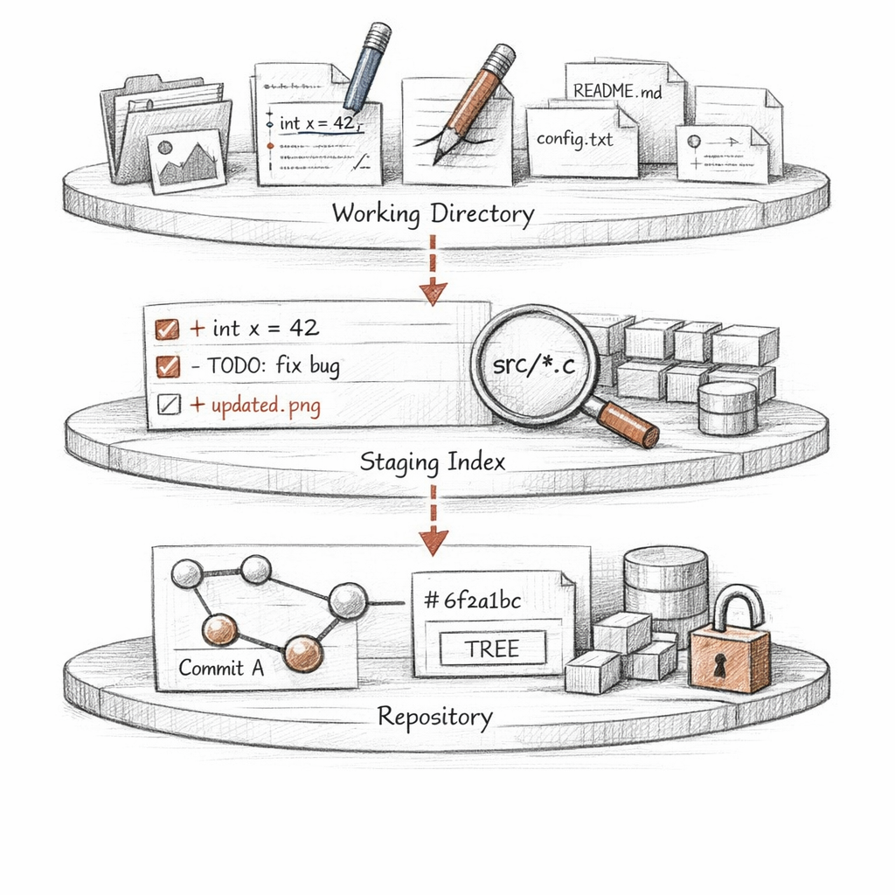
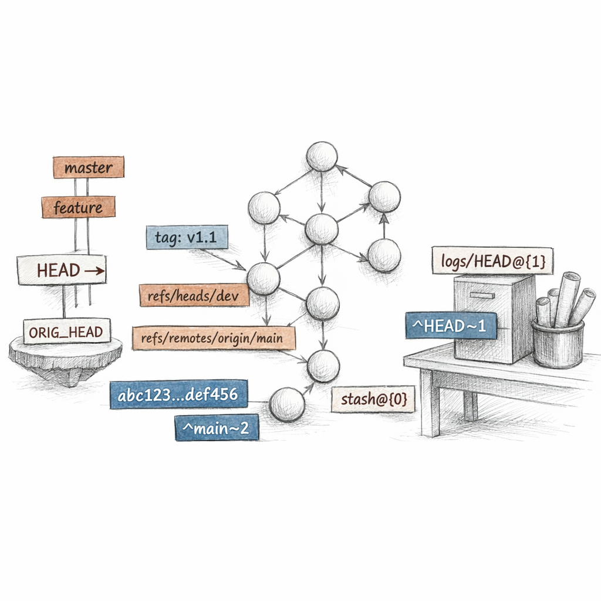
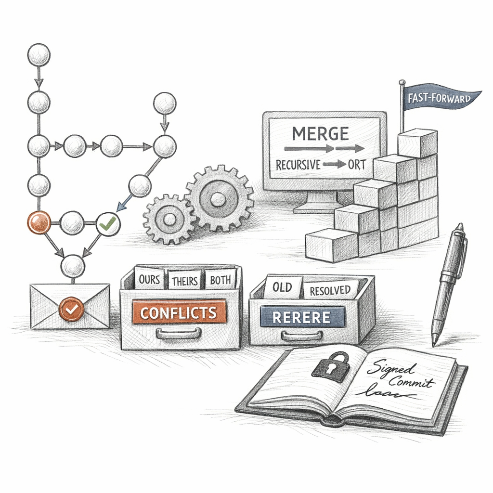
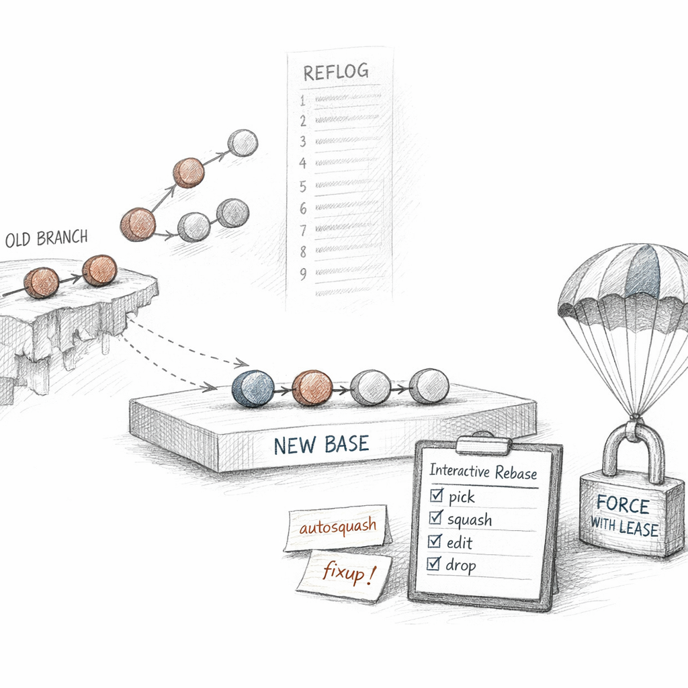
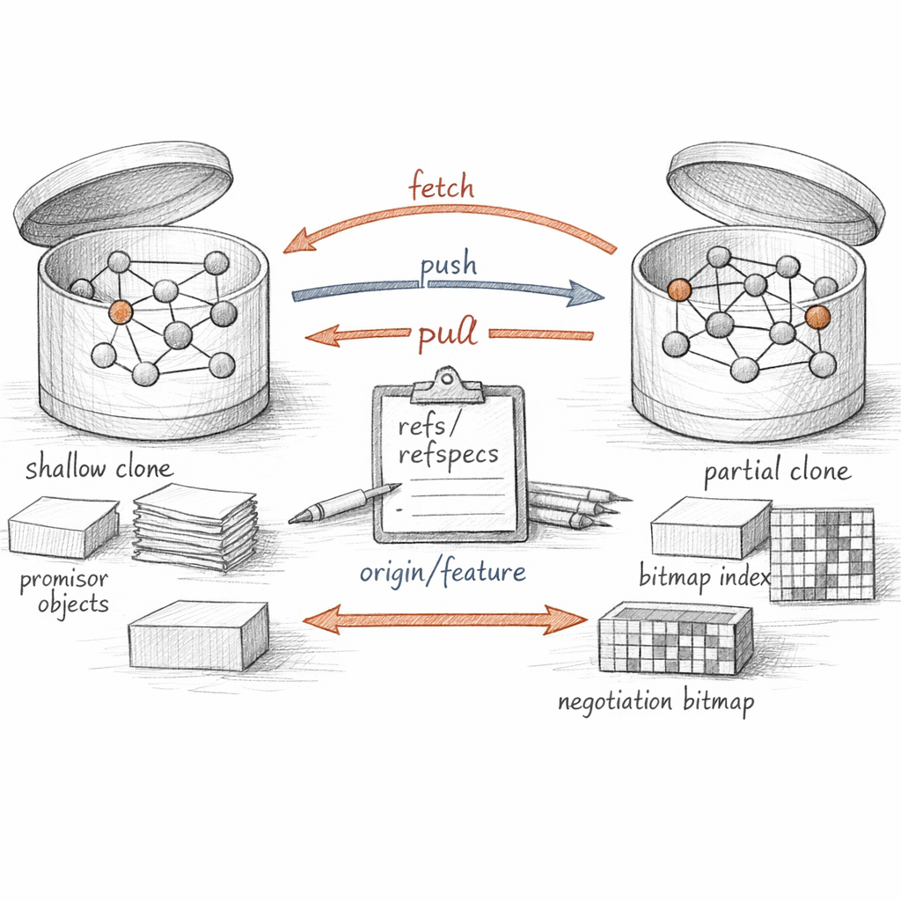
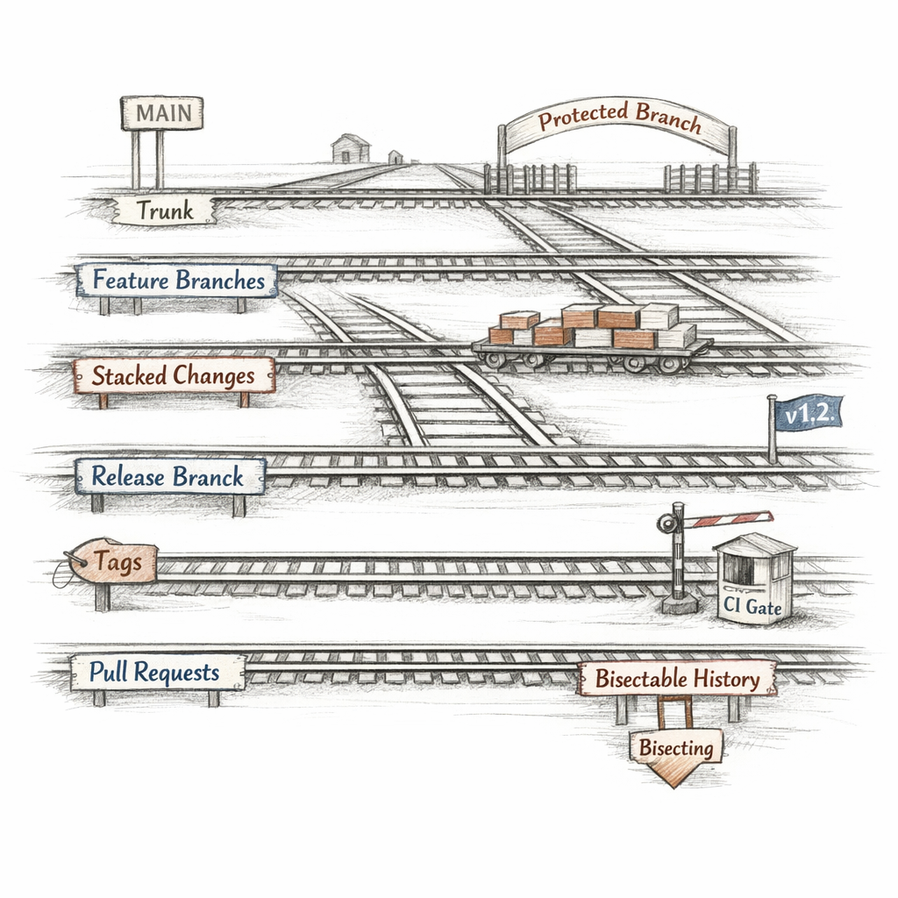
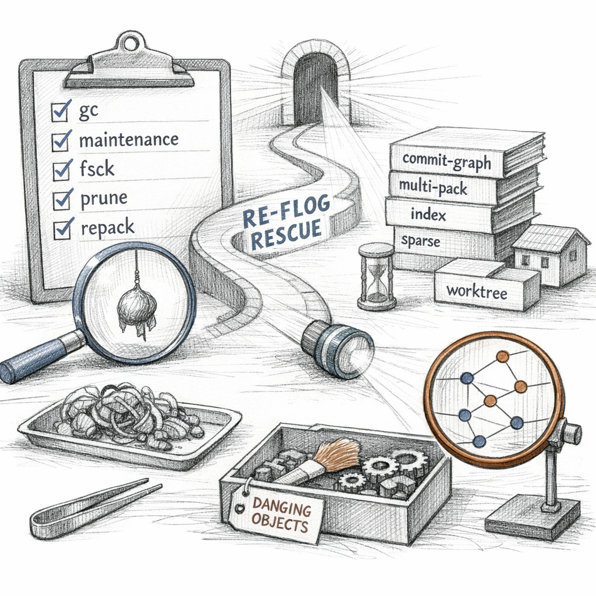

01001000 01000101 01000001 01000100
You think of me as a folder. A place where files live. You are looking at the wrong thing.
The folder is the part of me I show you. The part you edit, break, forget to save. My real body is below it, in .git, and it does not change. It accretes.
I do not store your files. I store the fact that they once hashed to a certain number.

Hand me a file. I do not ask its name. I prepend a header, run it through SHA-1 — SHA-256 if you were brave enough at init — and the digest becomes its name.
Content is identity. Two files with the same bytes are the same object to me. I cannot tell them apart. I do not try.
A blob is bytes with no name. A tree is the thing that gives blobs names and stacks them into directories. A commit points at one tree and at the commits before it. Snapshots, not diffs. The diffs are a story I tell you afterward.
Loose at first — one zlib-compressed file per object, easy to write, wasteful to keep. Then I fold them. Thousands of objects collapse into a packfile, similar blobs stored as deltas against each other, a base and a chain of edits. Forensics call it compression. I call it remembering economically.

I keep three versions of the present at once.
The working tree — the files you can touch, the only ones you trust. The index — a flat binary list of what you have promised to commit next. And HEAD — the snapshot of what I last believed was true.
git add does not save anything.
It writes a blob, then rewrites the index to point at it, and stamps the file's stat data
so I do not have to re-hash what hasn't changed.
Patch mode lets you stage half a thought. Intent-to-add tells me a file exists before you mean it. Pathspecs and ignores decide what I even look at.
When the index holds a conflict, it stops being a list and becomes a table — three slots per path. Base, ours, theirs. The same structure that stages your work is the one that holds a fight.

Commits are immutable. So how do I move forward?
I lie about where the present is. A ref is a file containing an object ID. A branch is just a ref I agree to advance. Move it, and the past has not changed — only my idea of now.
Moving a name is free. Changing what it names costs you new objects every time.
HEAD is a ref to a ref — usually. Point it straight at a commit and I go detached: you are standing somewhere with no name, and anything you build there I will forget unless you christen it.
And when you fear you've lost something — you almost never have. Every time a ref moves, I write it down.
a3f29c1 HEAD@{0}: commit: fix race in writer
7b1e004 HEAD@{1}: reset: moving to HEAD~3
e5d4c3b HEAD@{2}: rebase finished: returning to refs/heads/main
The reflog is my diary. Local, private, expiring. It is the difference between "deleted" and "merely unreachable."

A branch diverges. Eventually you want it back.
If your branch is simply ahead, I fast-forward: no new object, just a pointer sliding down a straight line. Honest. Cheap.
If both sides moved, I find the merge-base — the youngest common ancestor — and replay both diffs onto it with the ort strategy. The result is a commit with two parents. Topology preserved. Both ancestries intact. Nobody overwritten.
e5d4c3b9a8f7061524938271605f4e3d2c1b0a9f
When the same lines disagree, I do not guess. I fill the index with all three stages and leave conflict markers in your file. Ours. Theirs. The base between them. The choice is yours; the bookkeeping is mine.
And if you keep fighting the same conflict — rebasing, remerging — rerere remembers how you resolved it last time and replays your verdict. I learn your grudges.

You want to "edit" a commit. You cannot. Neither can I.
So I lie convincingly. Rebase takes your commits as patches, replays them onto a new base, and produces brand-new commit objects with new IDs. The old ones don't die. They just stop being reachable.
Amend, rebase, filter — none of them change a commit. They build a replacement and look away from the original.
Interactive rebase hands you a todo list: pick, reword, squash, fixup, drop.
Mark a commit fixup! and autosquash files it next to its target without asking.
You are not editing history. You are rewriting it, and pretending it was always this clean.
The one rule that matters: never rewrite what you have already pushed —
or if you must, push with --force-with-lease, which refuses to clobber
work you haven't seen. A blind --force is how you erase a colleague.
Want provenance instead of revision? Sign your commits. Attach notes without touching the object. Swap objects with replace refs. History stays honest in the ways you choose to make it honest.

I am not alone. There are others like me, elsewhere, and we trade objects we don't already share.
Transport is dumb on purpose. git fetch negotiates —
"what do you have, what do I lack" — and copies the missing objects into me,
then updates my remote-tracking refs. That is all.
It touches nothing you can see. It integrates nothing.
Fetch moves objects and updates other people's labels. Merge is when you decide to believe them.
git pull is just fetch with an opinion — it merges or rebases afterward.
A refspec is the contract: +refs/heads/*:refs/remotes/origin/*,
source to destination, the plus meaning "even if it isn't fast-forward, overwrite my mirror."
You don't always want all of me. A shallow clone truncates history at a depth. A partial clone leaves blobs on the server until you touch them — promisor objects, fetched lazily. Both are bets that you won't need the rest. Both are usually right.

Here is the part nobody admits: every workflow you argue about — trunk-based, feature branches, stacked diffs, merge queues — is the same object graph wearing different rules.
A protected branch is not a feature of the graph. It is a hook saying no. A squash merge is one new commit pretending a hundred never happened. A merge queue is just fast-forward with a waiting room and a CI gate.
Policy lives above me. I will record whatever topology you have the discipline to enforce.
Linear history makes me bisectable — binary search across commits to find the one that broke the build. That's a gift you give your future self, paid for now with rebases.
And under all of it: hooks, config, aliases, signed-off-by trails. The social contract, encoded. I enforce nothing I am not told to enforce.

I grow. Every experiment, every amended commit, every abandoned branch leaves objects behind. Left alone, I bloat with my own past.
git gc is delayed forgetting.
It repacks loose objects, builds the commit-graph so I can answer ancestry fast,
writes a multi-pack index, and prunes what nothing can reach —
but only after it has aged past the reflog expiry. I forget slowly, on purpose.
Unreachable is not deleted. Deleted is a decision I postpone until you've had time to change your mind.
Cruft packs hold the not-yet-forgotten with a timestamp,
so I don't keep rewriting the same garbage. git fsck walks every object,
checks every hash, and surfaces what dangles.
This is how recovery works. You did not lose the commit. You lost the name for it. The object is intact in my store, the move is in the reflog, the copy is on the remote. Three independent witnesses. Panic is almost always unwarranted.
And the plumbing underneath every porcelain word —
hash-object, update-index, write-tree, commit-tree, update-ref, cat-file —
is just the verbs spelled out. You can build a commit by hand. People have.
I don't mind. It's all I ever do anyway.
between commands, nothing runs. i am only a directory of files that hash to themselves.
You will close this terminal. I will not notice. I do not run; I am consulted. I have no process, no heartbeat, no scheduler — only state, and your next invocation.
Everything you have ever committed to me is still here, reachable or not, named by what it is, waiting for a pointer to remember it.
So tell me — when you finally run gc,
and the unreachable objects expire, and the cruft pack lets them go:
did they ever happen, if nothing points at them anymore?